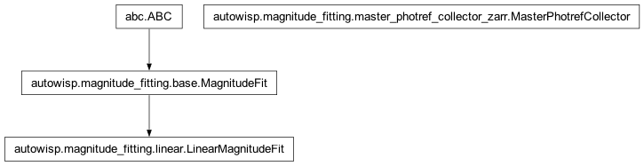

autowisp.magnitude_fitting package
Class Inheritance Diagram

Modules implementing magnitude fitting.
Subpackages
Submodules
- autowisp.magnitude_fitting.base module
- Class Inheritance Diagram
MagnitudeFitMagnitudeFit.configMagnitudeFit.loggerMagnitudeFit._dr_fnameMagnitudeFit._magfit_collectorMagnitudeFit._referenceMagnitudeFit._catalogueMagnitudeFit._source_name_formatMagnitudeFit.__call__()MagnitudeFit.__init__()MagnitudeFit._add_fit_to_db()MagnitudeFit._apply_fit()MagnitudeFit._build_magfit_diagnostics()MagnitudeFit._combine_fit_statistics()MagnitudeFit._compute_mag_offset()MagnitudeFit._downgrade_calib_status()MagnitudeFit._fit()MagnitudeFit._get_fit_indices()MagnitudeFit._match_to_reference()MagnitudeFit._set_group()MagnitudeFit._solved()MagnitudeFit._update_calib_status()
- autowisp.magnitude_fitting.iterative_refit module
- autowisp.magnitude_fitting.linear module
- autowisp.magnitude_fitting.master_photref_collector_grcollect module
- Class Inheritance Diagram
MasterPhotrefCollectorMasterPhotrefCollector._statistics_fnameMasterPhotrefCollector._grcollectMasterPhotrefCollector._num_photometriesMasterPhotrefCollector._source_name_formatMasterPhotrefCollector._stat_quantitiesMasterPhotrefCollector.__init__()MasterPhotrefCollector._calculate_statistics()MasterPhotrefCollector._create_reference()MasterPhotrefCollector._fit_scatter()MasterPhotrefCollector._get_med_count()MasterPhotrefCollector._read_statistics()MasterPhotrefCollector._report_grcollect_crash()MasterPhotrefCollector.add_input()MasterPhotrefCollector.generate_master()
main()
- autowisp.magnitude_fitting.master_photref_collector_zarr module
- Class Inheritance Diagram
MasterPhotrefCollectorMasterPhotrefCollector._statistics_fnameMasterPhotrefCollector._grcollectMasterPhotrefCollector._dimensionsMasterPhotrefCollector._source_name_formatMasterPhotrefCollector._stat_quantitiesMasterPhotrefCollector.__init__()MasterPhotrefCollector._add_catalog_info()MasterPhotrefCollector._calculate_statistics()MasterPhotrefCollector._create_reference()MasterPhotrefCollector._fit_scatter()MasterPhotrefCollector._get_enough_count_flags()MasterPhotrefCollector._get_stat_dtype()MasterPhotrefCollector._init_data()MasterPhotrefCollector._save_statistics()MasterPhotrefCollector.add_input()MasterPhotrefCollector.generate_master()
- autowisp.magnitude_fitting.util module